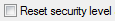

See also the State Dependency (Feature).
Security and Session diagnostic instances in a CANdela document are related with the States in a State Group.
A wizard helps to consistently create both the diagnostic instance(s) and states with state transitions (CDS-4648 and CDS-4649 5.0; CDS-33216 8.2 SP2).
Default (=) = value is typically “Default”, but not changed (“=”) by the wizard
executable = one of the services checked in the list “Executable Protocol services”
<new_session> = the new service / state created
<default> = the “default” session state (the first state in the state group)
<locked> = the “locked” state selected in the dialog.
<target_state> of a service = the state into which the service transits from <default> in the document. E.g. typically state “Default” for service “Default Session/Start”.
<session service> = service with SID 0x10
<UDS ECU Reset service> = service with SID 0x11 in document with ProtocolStandard “UDS”.
0x11 0x0[123] = regular expression denoting three services 0x11 0x01, 0x11 0x02, 0x11 0x03.
The “Session wizard” simplifies creation of new sessions, i.e. diagnostic instances of class type “Session” including all necessary states and state transitions, timing parameters etc.
The only use case is the creation of sessions. The dialog shall be available in any of the view of CANdelaStudio (i.e. in Standard and Expert view, both for documents and templates) except Translation view.
R001.1: Create a wizard dialog with three property pages (see requirements below) and buttons
at the bottom of the dialog.
R002.0: The wizard dialog must provide a short help text at the top of the dialog. Pages must be activated by clicking on the buttons only, i.e. in a “step-by-step” manner.
R003.4: The first property page must provide the following controls:
R004.0: The following conditions must be checked on clicking buttons [Next] or [Previous] of the property sheet:
If one of the checks fails, an appropriate error message must appear. The property page must not be switched then.
R005.5: The second property page must provide the following controls:
Protocol services to be executed in this session (“Executable Protocol services”): table with
… of all protocol services except
[X] (0x3E) Tester Presentcombo box “Locked state” containing all states of state groups with semantics “security”. Disabled, if check box “Reset security level…” is unchecked, enabled otherwise.
R006.2: the third property page must provide a summary of all modifications done by the user:
Name and state group name of the state created, with text “New state”, like:
New state 'safetySystemDiagnosticSession':
Located in state group 'Session'Note: no info about transitions, “Reset security level…”, “Locked state…”, “Protocol services which may be executed…” - these are better viewed in the overview.
The summary must be provided in an edit box which is read-only.
Add menu item “Create new session” to menu “Insert” and the context menu for diagnostic classes.
Both icon and menu item must be activated only if the document contains at least one diag class template with spec “session”.
On finishing, the dialog must...
... R010.0: create a new diagnostic instance (with service =: <new_session>) with the name, qualifier, identifier and timing parameters entered (cf. R003).
... R020.0: create a new state (=: <new_session>) in state group with spec “session” using the name and qualifier of the new diagnostic instance.
Guiding principle: the dialog shall not affect existing services or states, just new ones.
R100.0: for the service <new session>, go from all existing session states to the <new_session> state
R120.1: from the state <new_session>,
| Service/Job | Prefix | Default | Programming | Extended | <new session> |
|---|---|---|---|---|---|
| Sessions/*/Start | 10 LL | ||||
| -- Default Session | 10 01 | Default (=) | Default (=) | Default (=) | yes / no 8.2 SP2 Default |
| -- Programming Session | 10 02 | Programming (=) | Programming (=) | Programming (=) | yes / no 8.2 SP2 Programming |
| -- Extended Diagnostic Session | 10 03 | Extended (=) | (no) (=) | Extended (=) | yes / no 8.2 SP2 Extended |
| -- <new session> | 10 04 | (yes) 8.2 SP2 <new session> |
(yes) 8.2 SP2 <new session> |
(yes) 8.2 SP2 <new session> |
yes / no 8.2 SP2 <new session> |
| Security Access/*/Request | 27 LL | (no) (=) | (yes) (=) | (yes) (=) | yes / no |
| Security Access/*/Send | 27 LL yy | (no) (=) | (yes) (=) | (yes) (=) | yes / no |
| … all other services… | (no) (=) | (yes) (=) | (yes) (=) | yes / no | |
| Ecu Reset/*/Reset 0x11 0x0[123] | 11 LL | (yes) (=) | Default (=) | Default (=) | yes / no 8.2 SP2 Default |
R200.1: if “Reset security level after session change” is checked (cf. R005), then for the service <new session>, go from all security states except <locked> back to <locked>.
Note: before 8.2 SP2, CANdelaStudio also changed security state transitions for other executable services (= “Locked” in the table below). Don’t do this anymore (see “8.2 SP2 (=)” in the table below).
Note: a version number like “8.2 SP2” in a cell indicates a change implemented in that CANdelaStudio version.
| Service/Job | Prefix | Locked | Unlocked L1  |
Unlocked L1 Service is not executable |
Unlocked L1 Service is executable |
|---|---|---|---|---|---|
| Sessions/*/Start | 10 LL | ||||
| -- Default Session | 10 01 | (yes) (=) | Locked (=) | Locked (=) | Locked 8.2 SP2 Locked (=) |
| -- Programming Session | 10 02 | (yes) (=) | Locked (=) | Locked (=) | Locked 8.2 SP2 Locked (=) |
| -- Extended Diagnostic Session | 10 03 | (yes) (=) | Locked (=) | Locked (=) | Locked 8.2 SP2 Locked (=) |
| -- <new session> | 10 04 | (yes) | (yes) | Locked | Locked |
| Security Access/*/Request | 27 LL | (yes) (=) | (yes) (=) | (yes) (=) | Locked 8.2 SP2 (yes) (=) |
| Security Access/*/Send | 27 LL yy | Unlocked L1 (=) | (yes) (=) | (yes) (=) | Locked 8.2 SP2 (yes) (=) |
| … all other services… | (no) (=) | (yes) (=) | (yes) (=) | Locked 8.2 SP2 (yes) (=) |
|
| Ecu Reset/*/Reset 0x11 0x0[123] | 11 LL | (yes) (=) | Locked (=) | Locked (=) | Locked 8.2 SP2 Locked (=) |
Create new instances of diagnostic class “Security Access” to describe the “Security Level” of an ECU, including data objects, states and state transitions.
A “Security Level” of an ECU is represented as follows in CANdelaStudio:
R001.0: Implement wizard dialog which creates two new diagnostic instances “Request seed” and “Send key” (KWP/UDS service 0x27 “SecurityAccess”).
Note: the wizard is available without regard to the protocol standard of the document (the precise condition whether 0x27 may be added may change by and by, so it is left to the user).
R010.1: Extend the user interface by
R011.1: Both, icon and command must either…
a) only be active if the template contains a diagnostic class template of class type “Security Access”, or
b) if they are active always, the user must be informed about the reason that the functionality is not available.
R012.0: Provide command and icon in standard and expert view but not in translation view.
R013.1: Check range of identifier for the new diagnostic instances before opening the dialog:
if identifier for seed or identifier for key (= identifier for seed + 1) is > MAX, then show error message (like “No more levels left”) and do not open the wizard dialog.
MAX is the maximum value possible for the identifier (0xff for 1-byte identifier, 0xffff for 2-byte identifier etc.).
R020.0: Create wizard dialog with four property pages and buttons [Previous], [Next] and [Finish].
R021.2: The first two property pages collect data for the diagnostic instances “Seed” and “Key”, respectively. They must provide the following controls:
Check name, qualifier and identifier for uniqueness. Check whether identifier is <= MAX. Issue appropriate error messages on clicking [Next] or [Previous] if necessary (Wizard must not proceed to the next page if an error occurs in the current page).
R022.2: The controls of the second property page must be filled with some default entries, depending on the entries made in the first property page, i.e.:
R023.1: The third property page must provide controls for the following data:
All attribute values must be entered in a numerical edit box. If the default attributes (of diagnostic instance, category “CANdesc”) do not exist in the document, the edit boxes must be disabled, and a message must be shown.
R024.1: The fourth property page must provide a summary of all modifications:
The summary must be provided in an edit box which is read-only.
R026.1: If the selected variant is the base variant, the new instances must be distributed to all extended variants (same behavior like for all other new instances added to the base variant).
On finishing, the wizard must...
... R030.0: create the new diagnostic instances with services (=: <new level> Request Seed, <new level> SendKey) and data objects and add them to the selected variant
... R040.0: create a new state “Level X” (=: <new_level>) in state group with spec “security”, where X is the decimal value of the “Type” (variable value) of the diagnostic instance for Request Seed.
... set the attribute values of diagnostic instance Seed.
Guiding principle: the dialog shall not affect existing services or states, just new ones.
R100.0: for the services <new level> Request Seed and <new level> SendKey: set “may be executed” to…
| Service/Job | Prefix | Default | Programming | Extended |
|---|---|---|---|---|
| Sessions/*/Start | 10 LL | |||
| Default Session | 10 01 | Default (=) | Default (=) | Default (=) |
| Programming Session | 10 02 | Programming (=) | Programming (=) | Programming (=) |
| Extended Diagnostic Session | 10 03 | Extended (=) | (no) (=) | Extended (=) |
| Security Access/*/Request | 27 LL | |||
| -- Seed Level #1 | 27 01 | (no) (=) | (yes) (=) | (yes) (=) |
| -- <new level> RequestSeed | 27 03 | (no) | (yes) | (yes) |
| Security Access/*/Send | 27 LL yy | |||
| -- Key Level #1 | 27 02 yy | (no) (=) | (yes) (=) | (yes) (=) |
| -- <new level> SendKey | 27 04 yy | (no) | (yes) | (yes) |
| … all other services… | (no) (=) | (yes) (=) | (yes) (=) | |
| Ecu Reset/*/Reset 0x11 0x0[0123] | 11 LL | (yes) (=) | Default (=) | Default (=) |
R200.0: for the service <new level> Request Seed: set “may be executed” to “yes” for all states
R210.0: for the service <new level> SendKey:
R220.0: for each other SendKey service: if it goes from <locked> to a state X, then also go from the new state <new_level> to that state X.
R230.0: if ProtocolStandard = “UDS”: for each session service and each <UDS ECU Reset service> 0x11 0x0[123]: go back from <new_level> to <locked>
R240.0: for each other service: in <new_level>, set to “yes”
Note: a version number like “8.2 SP2” in a cell indicates a change implemented in that CANdelaStudio version.
| Service/Job | Prefix | Locked | Unlocked L1 | <new_level > |
|---|---|---|---|---|
| Sessions/*/Start | 10 LL | (yes) (=) | Locked (=) | Locked |
| Security Access/*/Request | 27 LL | (yes) (=) | (yes) (=) | (yes) |
| -- Seed Level #1 | 27 01 | (yes) (=) | (yes) (=) | (yes) |
| -- <new level> RequestSeed | 27 03 | (yes) | (yes) | (yes) |
| Security Access/*/Send | 27 LL yy | |||
| -- Key Level #1 | 27 02 yy | Unlocked L1 (=) | (yes) (=) | (yes) (=) 8.2 SP2 Unlocked L1 |
| -- <new level> SendKey | 27 04 yy | <new_level> | <new_level> | (no) |
| … all other services… | (no) (=) | (yes) (=) | (yes) | |
| Ecu Reset/*/Reset 0x11 0x0[0123] | 11 LL | (yes) (=) | Locked (=) | Locked |